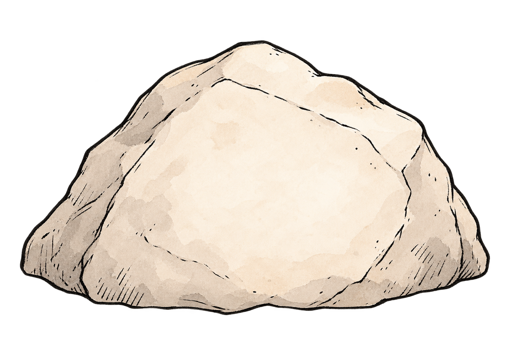

What AI Agents Are Built On
AI might feel like a completely new layer of computing.
But the foundations that ran the cloud now run the agent era.
The Excavation
Start at the surface. Dig beneath the AI agent to uncover the underlying mechanics.
What You've Uncovered
Dig to see what's underneath.

AI AgentDiscovering AI Agents
Workloads in tech continue to change and evolve. But the need for predictable,
isolated, reproducible execution hasn't changed.
The same principles that made the cloud possible now make AI agents possible.
// add explanation here